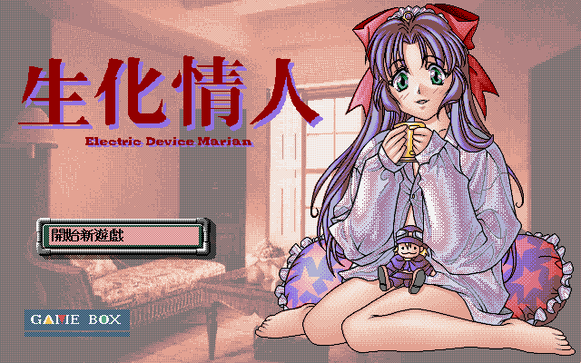
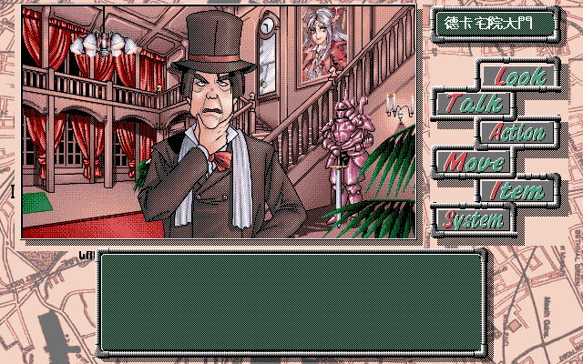

名稱：生化情人 (Electric Device Marian，中文版) 簡介：JANIS 1994年出品的18禁劇情故事閱讀遊戲，1996年由歡樂盒中文化並代理發行 [待補]。

保護：磁片版不明，光碟版為光碟。光碟版破解碼： PSYCD.EXE B8 00 3D BA 8E 00 CD 21 72 66 90 90 90 B4 19 CD 21 04 41 A2 71 00 EB 2A -- -- 74 3E 90 90 90 2E A0 -- 00 -- -- -- -- -- EB 05 90 B4 4C CD 21 -- -- -- 90 90 90 90 或 3F BA 71 00 B9 01 00 CD 21 72 55 90 90 90 19 -- -- -- -- -- -- -- -- 04 41 A2 71 00 74 3E 90 90 90 2E A0 -- 00 -- -- -- -- -- 75 1E 90 90 90 BA 83 -- 00 -- -- -- -- -- 74 06 90 90 90 EB 05 -- 00 -- -- -- -- -- 需拷貝光碟上的PICCD目錄到安裝目錄。 備註：光碟版與磁片版有數個檔案不同，尚不清楚其差異。辨識方法： 1.光碟版執行檔為PSYCD.EXE，以DISK.CFG記錄光碟位置，PRS檔目錄為PICCD。 2.磁片版執行檔為PSY.EXE，PRS檔目錄為PIC。 檔案：psy-disk.rar = 磁片版